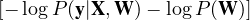

Inputs such as images can’t be thought of as a simple vector of input pixel values because the adjacency of pixels matters. If we had a network with fully connected layers, the semantics of adjacency would be lost. Furthermore, such a network would have a large number of weights, which would require vast numbers of training images, and a huge computational budget.
We can construct the first hidden layer so that each unit receives input only from a small, local region of the image. This helps preserve adjacency and cuts down on the number of weights. By using the same weights for each hidden unit, we can achieve spatial invariance. Each hidden unit becomes a feature detector that detects the same feature wherever it appears in the image. We can use multiple hidden units with multiple distinct sets of weights to detect multiple features.
A convolutional neural network (CNN) is one that contains spatially local connections, and has patterns of weights (kernels) replicated across all units in a later. The process of applying the kernel to the image is called convolution. We can define the convolution, z = x * k, of the input x of size n and the kernel k of size l, as
Instead of applying the kernel to adjacent groups of pixels, we might increase the separation between groups, called the stride s. A larger stride reduces the number of pixels in the output layer. For smaller kernels, we typically use s = 1. We might also add some padding to our input, so that the kernel can also be applied to the values at the edges.
If we try to detect d different featues using d different kernels with a stride of 1, the output will be d times larger than the input. A two-dimensional input array will become a three-dimensional array of hidden units, where the third dimension is of size d. This additional “kernel dimension” does not have any adjacency properties.
A pooling layer in a neural network summarizes a set of adjacent units from the preceding layer with a single value. Pooling works just like a convolution layer, but the operation that is applied is fixed rather than learned. There are two common forms of pooling:
Average-pooling computes the average value of its l inputs. This is identical to convolution with a uniform kernel k = [1∕l,…,1∕l]. If l = s, the layer downsamples the image by a factor of s.
Max-pooling computes the maximum value of its l inputs. It can be used for downsampling, but the semantics are different. Generally, max-pooling acts as a kind of logical disjunction, saying that a feature exists somewhere in the unit’s receptive field.
Tensors are multidimensional arrays of any dimension. They are generalizations of vectors and matrices. Tensors help CNNs keep track of the “shape” of the data. Tensors are also computationally efficient. Software can generate highly optimized code for tensor operations which are often run on GPUs (graphics processing units) or TPUs (tensor processing units).
For example, if we train on 256 × 256 RGB images with a minibatch size of 64, we will have an input tensor of size 256 × 256 × 3 × 64. Applying 96 kernels of size 5 × 5 × 3 with a stride sx = sy = 2 gives us an output tensor of size 128 × 128 × 96 × 64. Such a tensor is often called a feature map. In this case, it is composed of 96 channels, where each channel carries information from one feature.
Residual networks are a popular approach to building very deep networks that avoid the problem of vanishing gradients.
Typically layers in deep models completely replace the representation at the previous layer. Because each layer replaces the representation from the preceding layer, all the layers must learn to do something useful. If we set W(i) = 0 for any layer, the entire network would cease to function. If we also set W(i-i) = 0, the network would be unable to learn.
The key idea of residual networks is that a layer should perturb the representation from the previous layer rather than replace it entirely.
g is the activation function for the residual layer, and f is the residual, usually defined as a neural network with one nonlinear layer combined with one linear layer:
where W and V are learned matrices. If V = 0, then the layer passes its inputs through with no change. Whereas traditional networks must learn to propagate information, residual networks propagate information by default.
To train a neural network, any kind of optimization algorithm could be used, but in practice, modern neural networks are almost always trained with some variant of stochastic gradient descent. A few important considerations when training neural networks are:
The dimensionality of w and the size of the training set are very large. Using SGD with a relatively small minibatch size allows helps the algorithm escape small local minima through stochasticity. The small minibatch size ensures that the computational cost of each step is a small constant.
Gradient contributions of each example can be computed independently, which lets us take advantage of parallelism in GPUs or TPUs.
To improve convergence, we choose a learning rate that decreases over time.
Gradients from small minibatches may have high variance, and the gradient may point in the wrong direction, making convergence difficult. This may be solved by increasing minibatch size as training proceeds. Another approach is to incorporate the idea of momentum, which keeps a running average of the gradients of past minibatches.
Care must be taken to mitigate numerical instabilities such as overflow, underflow, and rounding error.
Back-propagation can be used for any feedforward computation graph. The back-propagation process passes messages back along each link in the network.
Suppose we have a computation graph where nodes f and g are inputs to node h, which itself is an input to nodes j and k. We know that h affects the output through j and k, so we can compute the derivative of L with respect to h by summing incoming messages from j and k:
Using this, we can compute the outgoing messages to its input nodes
The initial messages for back-propagation are generated by calculating the derivative of the loss function. These are used by nodes to compute the gradients for each weight. The computational complexity scales linearly with the number of nodes. Despite requiring all the intermediate values to be stored and increasing the memory requirement for training a model, this can greatly simplify and speed up training.
We can improve the rate of convergence of SGD by rescaling the values generated at the internal layers of the network from the example within each minibatch. Though the exact reason is not understood, it seems to have effects similar to the residual network.
Consider a node z in the network. The values of z for the m examples are z1,…,zm. Batch normalization replaces each zi with
where μ is the mean value of z, σ is the standard deviation of z, and ϵ is a small constant added to prevent division by zero. β and γ are learned parameters which may be node-specific or layer-specific.
Without batch normalization, information can get lost if a layer’s weights are too small. Batch normalization prevents this from happening by standardizing the mean and variance of the values. β and γ are included in the training process. After training, they are fixed at the learned values.
A lot of progress in performance has come from exploring different kinds of network architectures, and by varying the number of layers and their connectivity. Some architectures are designed to generalize well: convolutional networks encode the idea that the same feature extractor is useful at all locations, and recurrent networks encode the idea that the same update rule is useful at all points in a stream of sequential data.
Deep networks perform better than other machine learning approaches on tasks with higher dimensionality. Other approaches require preprocessing to reduce dimensionality and achieve performance comparable to deep learning systems.
However, deep learning models lack expressive power, and might produce unintuitive errors. They produce input-output mappings that are discontinuous, so a small change in input might cause a large change in the output. Such adversarial examples are easier to find in higher dimensions. They suggest that deep learning models recognize objects in ways that are very different from the human brain.
There are no clear sets of guidelines to choose the best network architecture for a problem. It is common to use neural architecture search to explore the space of possible architectures. Evolutionary algorithms have been popular because it is sensible to do recombination and mutation.
Estimating the value of a candidate network is a major challenge. We can evaluate an architecture by training it and evaluating its accuracy, but with large networks this is computationally expensive.
We can speed up estimation by training on a smaller data set, or by using a reduced number of batches and predicting the performance. We can also train a large network and search for subgraphs that perform better. This can be fast because the subgraphs share parameters and don’t have to be retrained.
We can also learn a heuristic evaluation function by training and testing some networks. Then we can generate a large number of candidate networks and quickly estimate their value using this function.
Weight decay is a regularization method in which a penalty λ∑ i,jWi,j2 is added to the loss function, where λ is a hyperparameter controlling the strength of the penalty.
In networks with sigmoid activation functions, it is hypothesized that the weight decay keeps activations near the linear part of the sigmoid, avoiding vanishing gradients. In residual networks, it encourages he network to have small differences between consecutive layers.
One explanation for the beneficial effect of weight decay is that it implements a form of maximum a posteriori (MAP) learning. The MAP hypothesis hMAP satisfies:
| hMAP | = argmaxwP(y|X, W)P(W) | ||
| = argminw |
The first term is the usual cross-entropy loss, and the second term prefers weights under a prior distribution. We can make this align with a regularized loss function if we set
Dropout tries to reduce the test-set error of the network at the cost of making it harder to fit the training set. At each step of training, dropout deactivates a randomly chosen subset of units and applies one step of back-propagation. This is a rough approximation to training a large ensemble of different networks.
By introducing noise at training time, the model is forced to become robust to noise. Hidden units trained with dropout must learn to be compatible with many other possible sets of hidden units, which is similar to the selection processes that guide evolution. Dropout applied to later layers in a network forces the final decision to be made by paying attention to all the abstract features.
By forcing the model to learn multiple robust explanations for each input, dropout makes the model generalize well. However, to fit the training set, it is usually necessary to use a larger model and train it for more iterations.